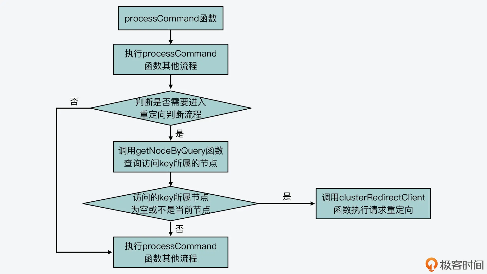

- 00 开篇词 阅读Redis源码能给你带来什么？.md
- 01 带你快速攻略Redis源码的整体架构.md
- 02 键值对中字符串的实现，用char还是结构体？.md
- 03 如何实现一个性能优异的Hash表？.md
- 04 内存友好的数据结构该如何细化设计？.md
- 05 有序集合为何能同时支持点查询和范围查询？.md
- 06 从ziplist到quicklist，再到listpack的启发.md
- 07 为什么Stream使用了Radix Tree？.md
- 08 Redis server启动后会做哪些操作？.md
- 09 Redis事件驱动框架（上）：何时使用select、poll、epoll？.md
- 10 Redis事件驱动框架（中）：Redis实现了Reactor模型吗？.md
- 11 Redis事件驱动框架（下）：Redis有哪些事件？.md
- 12 Redis真的是单线程吗？.md
- 13 Redis 6.0多IO线程的效率提高了吗？.md
- 14 从代码实现看分布式锁的原子性保证.md
- 15 为什么LRU算法原理和代码实现不一样？.md
- 16 LFU算法和其他算法相比有优势吗？.md
- 17 Lazy Free会影响缓存替换吗？.md
- 18 如何生成和解读RDB文件？.md
- 19 AOF重写（上）：触发时机与重写的影响.md
- 20 AOF重写（下）：重写时的新写操作记录在哪里？.md
- 21 主从复制：基于状态机的设计与实现.md
- 22 哨兵也和Redis实例一样初始化吗？.md
- 23 从哨兵Leader选举学习Raft协议实现（上）.md
- 24 从哨兵Leader选举学习Raft协议实现（下）.md
- 25 PubSub在主从故障切换时是如何发挥作用的？.md
- 26 从Ping-Pong消息学习Gossip协议的实现.md
- 27 从MOVED、ASK看集群节点如何处理命令？.md
- 28 Redis Cluster数据迁移会阻塞吗？.md
- 29 如何正确实现循环缓冲区？.md
- 30 如何在系统中实现延迟监控？.md
- 31 从Module的实现学习动态扩展功能.md
- 32 如何在一个系统中实现单元测试？.md
- 结束语 Redis源码阅读，让我们从新开始.md
27 从MOVED、ASK看集群节点如何处理命令？
在上节课一开始我给你介绍了，我们在 Redis Cluster 这个模块中会学习三部分内容：节点间如何传递信息和运行状态、节点如何处理命令，以及数据如何在节点间迁移。那么通过上节课的学习，现在我们已经了解了 Gossip 协议的基本实现，也就是支持集群节点间信息和运行状态传递的数据结构、关键函数设计与实现。
所以在今天这节课，我们就来了解下集群命令处理的实现。这部分内容不仅包括了集群节点处理一个命令的基本流程，更重要的是，我们可以掌握集群特定命令 MOVED、ASK 是如何实现的。这两个命令对应了 Redis Cluster 中请求重定向的处理场景，了解了这部分内容之后，我们就可以参考 Redis Cluster，来设计和实现分布式系统中的请求重定向。
接下来，我们先来看下集群节点处理一个命令的基本流程，这可以让我们对集群节点的实现有个整体观。
集群节点处理命令的基本流程
我在【第 14 讲】中提到过，Redis server 处理一条命令的过程可以分成四个阶段，分别是命令读取、命令解析、命令执行和结果返回。而和单个 Redis server 一样，Redis Cluster 中的节点，也是按照相同的阶段来处理命令的。
因此，集群节点在各阶段处理命令的入口函数和单个 Redis server 也是一样的，如下图所示。你也可以再去回顾下第 14 讲中，我介绍的命令处理详细流程。

但是，在其中的命令执行阶段，如果 Redis server 是一个集群节点，那么在命令执行的过程中，就会增加额外的处理流程，而这个流程正对应了 Redis Cluster 中可能遇到的请求重定向问题。
这里所说的请求重定向，是指客户端给一个集群节点发送命令后，节点发现客户端请求的数据并不在本地。因此，节点需要让客户端的请求，重新定向发给实际拥有数据的节点，这样客户端的命令才能正常执行。
而你需要注意，请求重定向其实是分布式系统设计过程中需要面对的一个常见问题。尤其对于像 Redis Cluster 这样，没有使用中心化的第三方系统来维护数据分布的分布式系统来说，当集群由于负载均衡或是节点故障而导致数据迁移时，请求重定向是不可避免的。所以，了解这个设计环节，对于你开发分布式系统同样具有重要的参考价值。
那么，下面我们就先来看下在命令执行阶段中，针对集群节点增加的处理流程，这是在 processCommand 函数（在 server.c 文件）中实现的。
processCommand 函数在执行过程中，会判断当前节点是否处于集群模式，这是通过全局变量 server 的 cluster_enable 标记来判断的。如果当前节点处于集群模式，processCommand 函数会判断是否需要执行重定向。
当然，如果当前节点收到的命令来自于它在集群中的主节点，或者它收到的命令并没有带 key 参数，那么在这些情况下，集群节点并不会涉及重定向请求的操作。不过，这里有一个不带 key 参数的命令是一个例外，就是 EXEC 命令。如果当前节点收到 EXEC 命令，processCommand 函数仍然会判断是否要进行请求重定向。
那么，processCommand 函数具体是如何判断是否要执行请求重定向的呢？
其实，它是调用了 getNodeByQuery 函数（在cluster.c文件中），来查询当前收到的命令能在哪个集群节点上进行处理。如果 getNodeByQuery 函数返回的结果是空，或者查询到的集群节点不是当前节点，那么，processCommand 函数就会调用 clusterRedirectClient 函数（在 cluster.c 文件中），来实际执行请求重定向。
下面的代码展示了集群节点处理命令过程中针对请求重定向增加的流程，你可以看下。
int processCommand(client *c) {
…
//当前Redis server启用了Redis Cluster模式；收到的命令不是来自于当前借的主节点；收到的命令包含了key参数，或者命令是EXEC
if (server.cluster_enabled && !(c->flags & CLIENT_MASTER)
&& !(c->flags & CLIENT_LUA && server.lua_caller->flags & CLIENT_MASTER)
&& !(c->cmd->getkeys_proc == NULL && c->cmd->firstkey == 0 &&
c->cmd->proc != execCommand))
{
…
clusterNode *n = getNodeByQuery(c,c->cmd,c->argv,c->argc, &hashslot,&error_code); //查询当前命令可以被哪个集群节点处理
if (n == NULL || n != server.cluster->myself) {
…
clusterRedirectClient(c,n,hashslot,error_code); //实际执行请求重定向
return C_OK;
}
}
当然，如果不需要执行请求重定向，那么 processCommand 函数会继续执行后续的流程，并调用 call 函数实际运行命令。
下图展示了 processCommand 函数针对集群节点增加的基本执行逻辑，你可以再回顾下。

好，接下来，我们就来看下 getNodeByQuery 函数是如何查询能处理一条命令的集群节点的。
如何查询能运行命令的集群节点？
首先，我们来看下 getNodeByQuery 函数的原型，如下所示：
clusterNode *getNodeByQuery(client *c, struct redisCommand *cmd, robj **argv, int argc, int *hashslot, int *error_code)
它的函数参数包括了节点收到的命令及参数。同时，它的参数中还包括了两个指针：hashslot 和 error_code，这两个指针分别表示命令访问的 key 所在的 slot（哈希槽），以及函数执行后的错误代码。此外，getNodeByQuery 函数的返回值是 clusterNode 类型，表示的是能处理命令的集群节点。
然后，我们来看下 getNodeByQuery 函数的具体执行过程，这个过程基本可以分成三个步骤来完成。
第一步，使用 multiState 结构体封装收到的命令
因为集群节点可能收到 MULTI 命令，而 MULTI 命令表示紧接着它的多条命令是需要作为一个事务来执行的。当 Redis server 收到客户端发送的 MULTI 命令后，它会调用 MULTI 命令的处理函数 multiCommand（在multi.c文件中），在表示客户端的结构体变量 client 中设置 CLIENT_MULTI 标记，如下所示：
void multiCommand(client *c) {
…
c->flags |= CLIENT_MULTI; //在客户端的标记中设置CLIENT_MULTI
addReply(c,shared.ok);
}
而在刚才介绍的命令执行函数 processCommand 中，它在处理命令时，会判断客户端变量 client 中是否有 CLIENT_MULTI 标记。如果有的话，processCommand 会调用 queueMultiCommand 函数，把后续收到的命令缓存在 client 结构体的 mstate 成员变量中。mstate 成员变量的类型是 multiState 结构体，它记录了 MULTI 命令后的其他命令以及命令个数。
下面的代码展示了 processCommand 函数对 CLIENT_MULTI 标记的处理，你可以看下。你也可以进一步阅读 queueMultiCommand 函数（在 multi.c 文件中）和 client 结构体（在server.h文件中），详细了解 MULTI 后续命令的记录过程。
int processCommand(client *c) {
…
//客户端有CLIENT_MULTI标记，同时当前命令不是EXEC，DISCARD, MULTI和WATCH
if (c->flags & CLIENT_MULTI &&
c->cmd->proc != execCommand && c->cmd->proc != discardCommand &&
c->cmd->proc != multiCommand && c->cmd->proc != watchCommand)
{
queueMultiCommand(c); //缓存命令
…
}
其实，刚才介绍的 Redis server 处理 MULTI 命令和缓存后续命令的流程，对于集群节点来说，也是同样适用的。也就是对于 getNodeByQuery 函数来说，它在查询命令访问的 key 时，就需要考虑 MULTI 命令的情况。
那么，为了使用同样的数据结构，来处理 MULTI 命令的后续命令和常规的单条命令，getNodeByQuery 函数就使用了 multiState 结构体，来封装当前要查询的命令，如下所示：
multiState *ms, _ms; //使用multiState结构体封装要查询的命令
…
if (cmd->proc == execCommand) { //如果收到EXEC命令，那么就要检查MULTI后续命令访问的key情况，所以从客户端变量c中获取mstate
…
ms = &c->mstate;
} else {
ms = &_ms; //如果是其他命令，那么也使用multiState结构体封装命令
_ms.commands = &mc;
_ms.count = 1; //封装的命令个数为1
mc.argv = argv; //命令的参数
mc.argc = argc; //命令的参数个数
mc.cmd = cmd; //命令本身
}
这里你需要注意，MULTI 命令后缓存的其他命令并不会立即执行，而是需要等到 EXEC 命令执行时才会执行。所以，在刚才的代码中，getNodeByQuery 函数也是在收到 EXEC 命令时，才会从客户端变量 c 中获取缓存的命令 mstate。
好了，到这里，你就可以看到，getNodeByQuery 函数使用 multiState 结构体，封装了当前的命令。而接下来，它就会检查命令访问的 key 了。
第二步，针对收到的每个命令，逐一检查这些命令访问的 key 所在的 slots
getNodeByQuery 函数会根据 multiState 结构中记录的命令条数，执行一个循环，逐一检查每条命令访问的 key。具体来说，它会调用 getKeysFromCommand 函数（在db.c文件中）获取命令中的 key 位置和 key 个数。
然后，它会针对每个 key，调用 keyHashSlot 函数（在 cluster.c 文件中）查询这个 key 所在的 slot，并在全局变量 server 的 cluster 成员变量中，查找这个 slot 所属的集群节点，如下所示：
for (i = 0; i < ms->count; i++) {
…
//获取命令中的key位置和key个数
keyindex = getKeysFromCommand(mcmd,margv,margc,&numkeys);
//针对每个key执行
for (j = 0; j < numkeys; j++) {
…
int thisslot = keyHashSlot((char*)thiskey->ptr, //获取key所属的slot sdslen(thiskey->ptr));
if (firstkey == NULL) {
…
slot = thisslot;
n = server.cluster->slots[slot]; //查找key所属的slot对应的集群节点
}
…
}
}
紧接着，getNodeByQuery 函数会根据查找的集群节点结果进行判断，主要有以下三种情况。
- 情况一：查找的集群节点为空，此时它会报错，将 error_code 设置为 CLUSTER_REDIR_DOWN_UNBOUND。
if (n == NULL) {
…
if (error_code)
*error_code = CLUSTER_REDIR_DOWN_UNBOUND;
return NULL;
}
- 情况二：查找的集群节点就是当前节点，而 key 所属的 slot 正在做数据迁出操作，此时，getNodeByQuery 函数会设置变量 migrating_slot 为 1，表示正在做数据迁出。
- 情况三：key 所属的 slot 正在做数据迁入操作，此时，getNodeByQuery 函数会设置变量 importing_slot 为 1，表示正在做数据迁入。
情况二和三的代码逻辑如下所示：
//如果key所属的slot正在迁出，则设置migrating_slot为1
if (n == myself && server.cluster->migrating_slots_to[slot] != NULL)
{
migrating_slot = 1;
} //如果key所属的slot正在迁入，则设置importing_slot为1
else if (server.cluster->importing_slots_from[slot] != NULL) {
importing_slot = 1;
}
这里，你需要注意的是，如果命令包含的 key 不止 1 个，而且这些 keys 不在同一个 slot，那么 getNodeByQuery 函数也会报错，并把 error_code 设置为 CLUSTER_REDIR_CROSS_SLOT。
到这里，getNodeByQuery 函数就查找到了命令访问的 key 所在的 slot，以及对应的集群节点。而此时，如果节点正在做数据迁出或迁入，那么，getNodeByQuery 函数就会调用 lookupKeyRead 函数（在 db.c 文件中），检查命令访问的 key 是否在当前节点的数据库中。如果没有的话，它会用一个变量 missing_keys，记录缺失的 key 数量，如下所示：
//如果key所属slot正在迁出或迁入，并且当前访问的key不在本地数据库，那么增加missing_keys的大小
if ((migrating_slot || importing_slot) && lookupKeyRead(&server.db[0],thiskey) == NULL)
{
missing_keys++;
}
接下来，getNodeByQuery 函数就会根据 slot 的检查情况来返回相应的结果了。
第三步，根据 slot 的检查结果返回 hashslot、error_code 和相应的集群节点
在 getNodeByQuery 函数的返回结果中，我们可以重点关注以下四种情况。
情况一：命令访问 key 所属的 slot 没有对应的集群节点，此时，getNodeByQuery 函数会返回当前节点。在这种情况下，有可能是集群有故障导致无法查找到 slot 所对应的节点，而 error_code 中会有相应的报错信息。
if (n == NULL) return myself;
情况二：命令访问 key 所属的 slot 正在做数据迁出或迁入，而且当前命令就是用来执行数据迁移的 MIGRATE 命令，那么，getNodeByQuery 函数会返回当前节点，如下所示：
if ((migrating_slot || importing_slot) && cmd->proc == migrateCommand)
return myself;
情况三：命令访问 key 所属的 slot 正在做数据迁出，并且命令访问的 key 在当前节点数据库中缺失了，也就是刚才介绍的 missing_keys 大于 0。此时，getNodeByQuery 函数会把 error_code 设置为 CLUSTER_REDIR_ASK，并返回数据迁出的目标节点。
if (migrating_slot && missing_keys) {
if (error_code) *error_code = CLUSTER_REDIR_ASK;
return server.cluster->migrating_slots_to[slot];
}
情况四：命令访问 key 所属的 slot 对应的节点不是当前节点，而是其他节点，此时，getNodeByQuery 函数会把 error_code 设置为 CLUSTER_REDIR_MOVED，并返回 key 所属 slot 对应的实际节点。
if (n != myself && error_code) *error_code = CLUSTER_REDIR_MOVED;
return n;
好了，到这里，我们就了解了 getNodeByQuery 函数对命令访问 key 的查询过程了。我画了张图，展示了 getNodeByQuery 函数基本执行过程，你可以再回顾下。

那么，有了 key 所属节点的查询结果后，processCommand 函数接下来又会如何进行请求重定向呢?
实际上，这一步是通过执行请求重定向的函数 clusterRedirectClient 来完成的。
请求重定向函数 clusterRedirectClient 的执行
当 getNodeByQuery 函数查到的集群节点为空或者不是当前节点时，clusterRedirectClient 函数就会被调用。
而 clusterRedirectClient 函数的逻辑比较简单，它就是根据 getNodeByQuery 函数返回的 error_code 的不同值，执行相应的代码分支，主要是把 key 所属 slot 对应集群节点的情况返回给客户端，从而让客户端根据返回的信息作出相应处理。比如：
- 当 error_code 被设置成 CLUSTER_REDIR_CROSS_SLOT 时，clusterRedirectClient 函数就返回给客户端“key 不在同一个 slot 中”的报错信息；
- 当 error_code 被设置成 CLUSTER_REDIR_MOVED 时，clusterRedirectClient 函数会返回 MOVED 命令，并把 key 所属的 slot、slot 实际所属的节点 IP 和端口号，返回给客户端
- 当 error_code 被设置成 CLUSTER_REDIR_ASK 时，clusterRedirectClient 函数会返回 ASK 命令，并把 key 所属的 slot、slot 正在迁往的目标节点 IP 和端口号，返回给客户端。
下面的代码展示了刚才介绍的 clusterRedirectClient 函数对三种 error_code 的处理，你可以看下。
void clusterRedirectClient(client *c, clusterNode *n, int hashslot, int error_code) {
if (error_code == CLUSTER_REDIR_CROSS_SLOT) {
addReplySds(c,sdsnew("-CROSSSLOT Keys in request don't hash to the same slot\r\n"));
}
…
else if (error_code == CLUSTER_REDIR_MOVED || error_code == CLUSTER_REDIR_ASK)
{
addReplySds(c,sdscatprintf(sdsempty(),
"-%s %d %s:%d\r\n",
(error_code == CLUSTER_REDIR_ASK) ? "ASK" : "MOVED",
hashslot,n->ip,n->port));
}
…
}
这样，集群节点处理收到的命令的过程就结束了。
最后，我还想提醒你注意一点，就是 Redis Cluster 的客户端和针对单个 Redis server 的客户端，在实现上是有差别的。Redis Cluster 客户端需要能处理节点返回的报错信息，比如说，如果集群节点返回 MOVED 命令，客户端就需要根据这个命令，以及其中包含的实际节点 IP 和端口号，来访问实际有数据的节点。
小结
今天这节课，我给你介绍了集群节点对客户端命令的处理过程。和单个 Redis server 处理命令的过程相似，集群节点也会经历命令读取、解析、执行和返回结果四个阶段，并且集群节点也使用了和单 Redis server 相同的入口处理函数。
不过你要知道的是，Redis Cluster 会因为负载均衡或节点故障等原因而执行数据迁移，而这就会导致客户端访问的 key 并不在接收到命令的集群节点上。因此，集群节点在命令执行函数 processCommand 中，针对集群模式，就增加了额外的处理逻辑。这主要是包括调用 getNodeByQuery 函数查询访问的 key 实际所属的节点，以及根据查询结果调用 clusterRedirectClient 函数执行请求重定向。
事实上，对于分布式集群来说，Redis Cluster 设计实现的请求重定向机制是一个不错的参考示例。其中，MOVED 和 ASK 两种重定向情况，就充分考虑了数据正在迁移的场景，这种设计值得我们学习。而且，getNodeByQuery 函数在查询 key 所属的 slot 和节点时，也充分考虑了 Redis 的事务操作，在对命令访问 key 进行查询时，巧妙地使用了同一个数据结构 multiState，来封装事务涉及的多条命令和常规的单条命令，增加了代码的复用程度，这一点也非常值得学习。
当然，在这节课里我们也多次提到了数据迁移，那么在下节课，我就会给你介绍 Redis Cluster 中数据迁移的具体实现。
每课一问
processCommand 函数在调用完 getNodeByQuery 函数后，实际调用 clusterRedirectClient 函数进行请求重定向前，会根据当前命令是否是 EXEC，分别调用 discardTransaction 和 flagTransaction 两个函数。那么，你能通过阅读源码，知道这里调用 discardTransaction 和 flagTransaction 的目的是什么吗?
int processCommand(client *c) {
…
clusterNode *n = getNodeByQuery(c,c->cmd,c->argv,c->argc,
&hashslot,&error_code);
if (n == NULL || n != server.cluster->myself) {
if (c->cmd->proc == execCommand) {
discardTransaction(c);
} else {
flagTransaction (c);
}
clusterRedirectClient(c,n,hashslot,error_code);
return C_OK;
}
…
}
© 2019 - 2023 Liangliang Lee. Powered by Vert.x and hexo-theme-book.